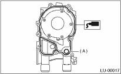
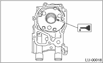

Install in the reverse order of removal.
Perform the following.
1. Apply liquid gasket to the mating surfaces of oil pump.
Liquid gasket:
THREE BOND 1215 (Part No. 004403007) or equivalent

2. Replace O-ring (A) with a new part.
3. Apply a coat of engine oil to the inside of oil seal.

4. Position the oil pump, aligning the notched area with crankshaft, and push the oil pump straight.
CAUTION:
• Make sure the oil seal lip is not folded.
• Be careful not to scratch the oil seal when installing oil pump on cylinder block.
5. Install the oil pump.
6. Apply liquid gasket to the three bolts thread shown in figure. (if the bolts are reused)
Liquid gasket:
THREE BOND 1324 (Part No. 004403042) or equivalent
Tightening torque:
6.4 N·m (0.65 kgf-m, 4.7 ft-lb)